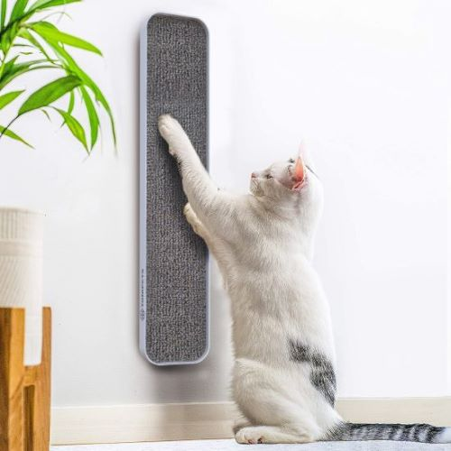

Rascador para gatos
Precio: $150.300
Características:
- Material resistente y duradero
- Ideal para el entretenimiento del gato
- Ayuda a mantener sus uñas sanas

El rascador para gatos DODS está diseñado para ofrecer diversión, comodidad y bienestar a tu felino. Fabricado con materiales resistentes, permite que los gatos desgasten sus uñas de manera natural, evitando daños en muebles y objetos de tu hogar.
Además de funcional, cuenta con un diseño atractivo que se adapta a cualquier espacio. Es ideal para mantener a tu gato activo y feliz.